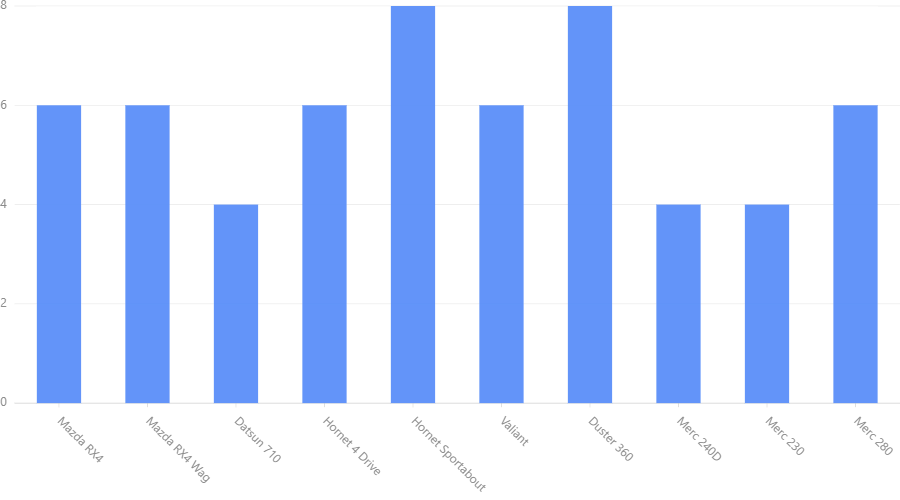
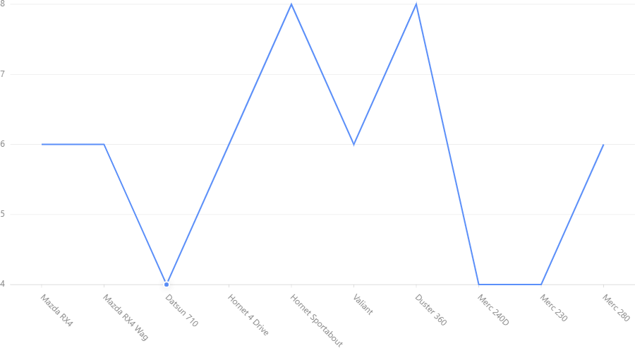
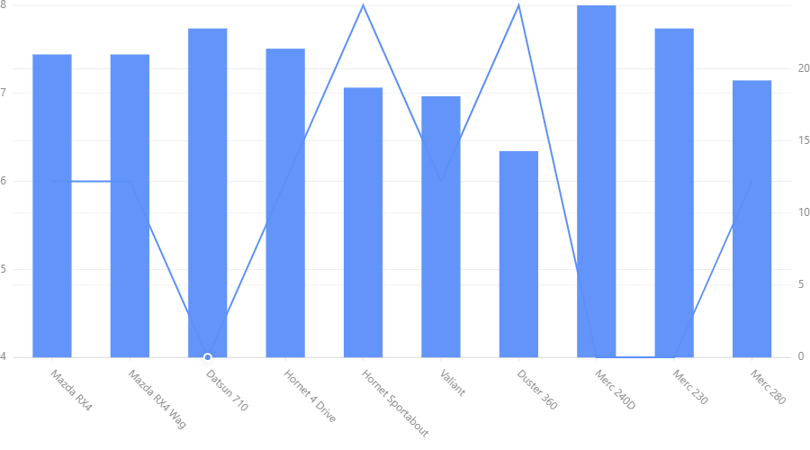

Create Your First Chart with pyG2¶
Installation¶
pip install pyG2
pyG2 only supports jupyter notebook. (Jupyterlab and Colab is not still supported.)
Open jupyter notebook and create a new notebook file.
Import G2 module:
from pyG2 import G2
Prepare the data set (Details of several cars from mtcars dataset):
data =[ {'name': 'Mazda RX4', 'mpg': 21.0, 'cyl': 6}, {'name': 'Mazda RX4 Wag', 'mpg': 21.0, 'cyl': 6}, {'name': 'Datsun 710', 'mpg': 22.8, 'cyl': 4}, {'name': 'Hornet 4 Drive', 'mpg': 21.4, 'cyl': 6}, {'name': 'Hornet Sportabout', 'mpg': 18.7, 'cyl': 8}, {'name': 'Valiant', 'mpg': 18.1, 'cyl': 6}, {'name': 'Duster 360', 'mpg': 14.3, 'cyl': 8}, {'name': 'Merc 240D', 'mpg': 24.4, 'cyl': 4}, {'name': 'Merc 230', 'mpg': 22.8, 'cyl': 4}, {'name': 'Merc 280', 'mpg': 19.2, 'cyl': 6} ]
Create the chart (Number of cylinders of each car):
chart = G2.Chart(height=500,width=900) chart.data(data) chart.interval().position('name*cyl') chart.render()
Output:
Explaination of code¶
G2.Chart() generates a chart object which holds details of the chart. Height and weight are optional. (Default is 500pt, 400pt).
chart.data(data) provides data to the chart. There are two supported data formats: list of dictionaries as in the example or pandas.DataFrame.
(Latter is recommended.)
chart.interval().position('name*cyl') specifies geometry and aesthetics of the chart. 'name*cyl' is the map that is
represented in the chart. It is represented as a position. We choose interval geometry (bars) to visualize the chart.
chart.render() renders the chart to the notebook output.
Try Other Geometries¶
Use this code to generate a line chart:
chart = G2.Chart(height=500,width=900)
chart.data(data)
chart.line().position('name*cyl')
chart.render()
- Output:
- 
Try area, point plots. Hint: Change line in above code to these words.
Multiple plots¶
We shall create two graphs in one chart.
Name vs. Miles for Galon (mpg) : line
Name vs. No. of Cylinders (cyl) : interval (bar)
code:
chart = G2.Chart(height=500,width=900)
chart.data(data)
chart.line().position('name*cyl')
chart.interval().position('name*mpg')
chart.render()
Output:

Read our tutorials to learn how to generate various types of charts
Special Note:
If graphs are not visible when the notebook reloads, restart the kernal and run the code again.